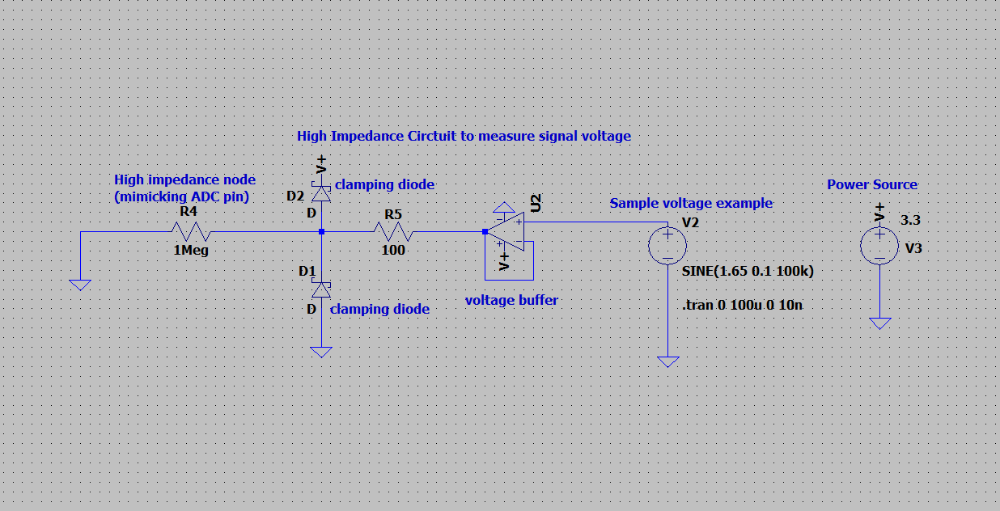

I'm building an STM32-based oscilloscope that samples and visualizes analog
signals between 0-3.3V. The design includes a high-impedance analog front-end
for safely probing external signals, DMA-driven ADC sampling and SPI display
transmission to avoid CPU bottlenecks, firmware written entirely in bare-metal C,
and a custom PCB and enclosure to house the electronics.
Current Progress
Designed a high-impedance analog front-end to safely sample signal voltage at 1Msps with probes

Next Steps
Using DMA to store signal samples and transmit them to the display over SPI in parallel, avoiding CPU blocking
V1: Signal Displayer (Proof of Concept)
Before building the full oscilloscope, I built a small signal displayer as a
stepping stone. It has 2 channels which can be switched via buttons to display
either a varying voltage or PWM signal, both between 0-3.3V.
(I initially wrote the code using STM32CubeMX but then transitioned to bare-metal C using the STM32 reference manual and datasheet)
How to configure hardware peripherals (ADC, GPIO, SPI, timers) at the register level using bitwise operations and bitmasks.
How to implement channel switching with buttons by using the ARM interrupt controller (NVIC) and routing hardware interrupts to my ISR functions.
How to communicate using the SPI protocol by writing a custom device driver to interface with the display module (based on its own datasheet).